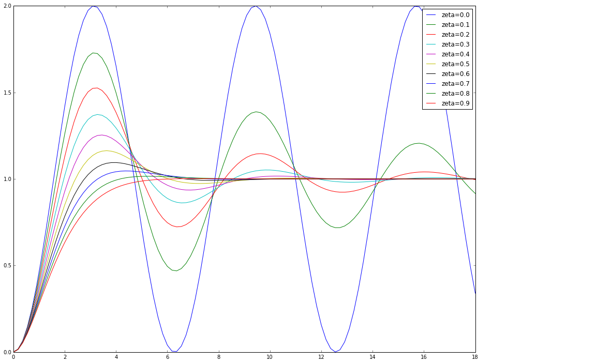
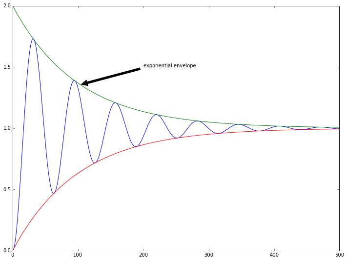
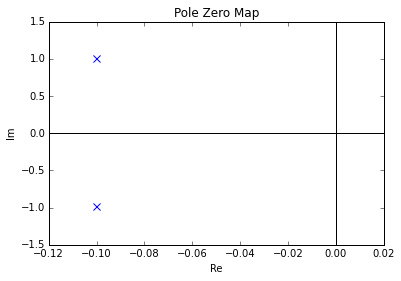

}$$
Notes from The Art of Control Engineering (Dutton, Thompson, Barraclough)
some basic design requirements
Step input
\(u(t)=\begin{cases} 0,\quad t < 0 \\ A ,\quad t > 0 \end{cases}\)
The time response of a step function having magnitude A acting on a systems input \(u(t)\). At \(t=0\) the function is undefined, but normally \(u(t)=A\) when \(t=0\) The Laplace transform of a step input is
\(\mathscr L \{ A \} = \displaystyle\frac{A}{S}\)
and adds a pole to the systems output which maps to a point at the origin of the \(s-plane\).
Ramp input
\(u(t)=\begin{cases} 0,\quad t \leq 0 \\ kt ,\quad t > 0 \end{cases}\)
The ramp input has a Laplace Transform :
\(\mathscr L \{ kt \} = \displaystyle\frac{k}{S^2}\)
and results in a double pole at the origin of the \(s-plane\). Since this input is unbounded (continously increases), the output to a linear system will also be unbounded (but real systems will have
saturation points, as will inputs). The systems response to this is said to be unstable.
Pulse Input
There are many types and shapes of pulses, including the rectangular pulse formed by two sucessive steps of equal magnitude but opposite sign ...
\(u(t)=\begin{cases} 0,\quad t < 0 \\ A \quad 0 < t \leq \Delta t \\ 0 \quad t > \Delta t \end{cases}\)
The Unit Impulse
\(u(t)=\begin{cases} A+\frac{A}{\delta t}t ,\quad t < 0 \\ A-\frac{A}{\delta t}t \quad t > 0 \end{cases}\)
The Laplace transform of the unit impulse is unity, so the impulse has no effect and is often assumed when evaluating a systems time response directly from the LTF.
Steady state sinusoidal input
\(u(t) = A \sin(\omega t) \)
For the point of view of frequency domain systems this is the most useful forcing input. The relevant response is the sinusoidal steady state response which is observed only after the transient effects
have dissappeared so the time scale becomes arbitrary. The Laplace transform of this function is
\( \mathscr L \{ A \sin(\omega t) = \displaystyle{A\omega}{s^2+\omega^2}\)
and this adds two imaginary poles to the \(s-plane\), one at \(s=j\omega\) and one at \(s=-j\omega\).
Random Input
Thsse can be performed with statistical analysis. A system may be represented as
\(\displaystyle Y(s)=\frac{N(s)}{D(s)}U(s) + \frac{I(s)}{D(s)}\)
where \(G(s) = \frac{N(s)}{D(s)}\) is the system transfer function and \(I(s)\) is a function of the intial conditions \(y(0)\). The systems output is the result of two terms: the transient produced by the intial conditions of the system ( \(I(s)\) and a forced response due to the intial conditions \(G(s)U(s)\). In mathematical terms this is equivalent to saying that the systems output is given by the complementary function (transient I(s)) and the particular integral (G(s), the forced response). When a system is in steady state condition all the transients become zero as \(I(s)\) becomes zero.
stability and laplace transform models
For a typical system of the form in section 02 we have the partial fraction expansion (see section on partial fractions)
\(Y(s)=\displaystyle\frac{N(s)}{D(s)}=\frac{A_1}{s+p_1}+\frac{A_2}{s+p_2}+\cdots +\frac{A_n}{s+p_n}\)
The factorization produces n-poles since the denominator was of order n. These poles could be real or complex. If a pole is real it will have a single real coefficient. When a pair of complex conjugate poles, \(p_j\) and \(p_{j+1}\) then the coefficients \(A_j\) and \(A_{j+1}\) will also form a complex conjugate pair.
For a real pole, the invserse Laplace transform is:-
\(\mathscr L^{-1} \left[ \frac{A_i}{s+p_i}\right]=A_i e^{-p_i t}\)
If the root of \((s+p_i)\) is negative (p positive) then the exponent is also negative, if positive then it is positive. If the root is zero then the term reduces to \(A_i\)
With a pair of complex conjugate poles the inverse Laplace transform takes the form ...
\(\mathscr L^{-1} \displaystyle\left[\frac{g+jh}{s+a-jb}+\frac{g-jh}{s+a+jb}\right]\)
\(\displaystyle = (g+jh)e^{-(a+jb)t} +(g-jh)e^{-(a+jb)t}\)
\(\displaystyle = e^{-at}[(g+jh)(\cos(bt)+j\sin(bt)) + (g-jh)(\cos(bt)-j\sin(bt))]\)
\(\displaystyle = 2e^{-at}[g\cos(bt)-h\sin(bt)]\)
and from the trigonometric identity \(M\cos(bt+\theta)=M(\cos(bt)\cos(\theta)-\sin(bt)\sin(\theta))\) with \(g=M\cos(\theta)\) and \(h=M\sin(\theta)\) giving the coordinate conversion \(\theta=\arctan\left(\frac{h}{g}\right)\)
\(\mathscr L^{-1} \displaystyle\left[\frac{g+jh}{s+a-jb}+\frac{g-jh}{s+a+jb}\right] = 2Me^{-at}\cos(bt+\theta)\)
For multiple poles with the same s-plane location, we can assume there are m complex conjugate poles with the the system equation havintg the form:
\(\displaystyle \frac{A_{im}}{(s+p_i)^m}+\frac{A_{i(m-1)}}{(s+p_i)^{m-1}}+\cdots +\frac{A_{i1}}{(s+p_i)}\)
with a corresponding inverse Laplace transform giving the time response:-
\(\displaystyle A_{im}\frac{t^{(m-1)}}{(m-1)!}e^{-p_it} + A_{i(m-1)}\frac{t^{(m-2)}}{(m-2)!}e^{-p_it}+\cdots+A_{i1}e^{-p_it}\)
And the pole location determines the dynamics of the response.
Effectively summing the inverse Laplace transform of the system can be obtained by summation of the contributions from each pole. A system whose impulse response decays to its steady state value with time is
said to be asymptotically stable. This will occur if the real parts of all the system poles have negative values. A system whos response does not decay with time is unstable and this occurs when the real parts have positive values. If there are non-repeated real parts of poles having zero values the system is marginally stable. If there are repeated poles with zero real parts the system is always unstable. Clearly the stable region of the s-domain lies to the left of the zero point.
stability and state space models
From the standard linear state space model, we can include initial conditions and assess stability. Taking the Laplace transform
\(\begin{cases} \mathscr L^{-1}[\mathbf{\dot x}=\mathbf{Ax}(t)+\mathbf{Bu}(t)] \qquad [s\mathbf x(s)=\mathbf{Ax}(s)+\mathbf{Bu}(s)]\\ \mathscr L^{-1}[\mathbf{ y}=\mathbf{Cx}(t)+\mathbf{Du}(t)] \qquad [\mathbf y(s)=\mathbf{Cx}(s)+\mathbf{Du}(s)]\end{cases}\)
or
\( [s\mathbf x(s)-\mathbf x(0)=\mathbf{Ax}(s)+\mathbf{Bu}(s)]\)
with the intial condition \(\mathbf x(0)\)
\( [s\mathbf I-\mathbf A]\mathbf x(s)=\mathbf x(0) + \mathbf{Bu}(s)\)
so
\( \mathbf x(s)=[s\mathbf I-\mathbf A]^{-1}\mathbf x(0) + [s\mathbf I-\mathbf A]^{-1}\mathbf{Bu}(s)\)
this equation was solved by anaology with the equivalent scalar equation ... (luck i suppose)
\( X(s)=\displaystyle \frac{1}{s-a}x(0)+\frac{1}{s-a}bU(s)\) with the time domain solution \( \displaystyle x(t)= e^{at}x(0)+\int_0^te^{a(t-\tau)} b u(\tau) d\tau\)
and the matrix equivalent is :
\( \displaystyle \mathbf x(t)= e^{\mathbf At}\mathbf x(0)+\int_0^te^{\mathbf A(t-\tau)} \mathbf{B u}(\tau) d\tau\)
also written as
\( \displaystyle \mathbf x(t)= \mathbf \Phi(t)\mathbf x(0)+\int_0^t\mathbf \Phi(t-\tau) \mathbf{B u}(\tau) d\tau\)
where \(\mathbf \Phi (t) \) is called the transition matrix and is equal to \(e^{\mathbf A t}\). This matrix can be specified in the Laplace domain ...
\(\mathbf x(s)=\mathbf \Phi (s) \mathbf x(0)+\mathbf \phi (s) \mathbf {Bu}(s) \) (3.8)
where \(\mathbf \Phi(s) = [s\mathbf I-\mathbf A]^{-1}\)
The transition matrix carries the information of the poles of the system and therefore determines its stability. The matrix part \(\mathbf A\) is the matrix that determines the stability of the state space system.
Plugging (3.8) into the output s-domain equivalent output equation
\( \displaystyle \mathbf y(s) =\mathbf{Cx}(s)+\mathbf{Du}(s)= \mathbf{C\Phi}(s)\mathbf{Bu}(s)+\mathbf {Du}(s)+\mathbf {C\Phi}(s)\mathbf x(0)\)
and to solve this the equation \([s\mathbf I-\mathbf A\) (incidently the inverse of \(\mathbf \Phi(s)\) was required and contains all the system poles, and is known as the system characteristic equation:-
\(\displaystyle|\lambda\mathbf I-\mathbf A|=|\mathbf A-\lambda \mathbf I|=0\)
So the eigenvalues of the plant matrix \(\mathbf A\) are identical to the roots of the determinant and are the characteristic values for the plant. The eigenvalues are the same for any state space representation.
poles and eigen values of the antenna positining system
For the antenna positioning system...(yes I really want one)
\(\displaystyle \frac{Y(s)}{U(s)}=\frac{5}{s(s+1)(s+5)}=\frac{5}{s^3+6s^2+5s}\)
The poles are of course by inspection, 0, -1 and -5. So by inspection it should be stable. The state equations are:-
\(\begin{pmatrix}\dot x_1\\ \dot x_2\\ \dot x_3 \end{pmatrix}= \begin{pmatrix} 0&1&0\\0&-1&1\\0&0&-5\end{pmatrix}\begin{pmatrix} x_1\\x_2\\x_3\end{pmatrix}+\begin{pmatrix}0\\0\\5\end{pmatrix}u \)
and
\(\begin{pmatrix}\dot x_1\\ \dot x_2\\ \dot x_3 \end{pmatrix}= \mathbf c\mathbf x=\begin{pmatrix} 1&0&0\end{pmatrix}\begin{pmatrix} x_1\\x_2\\x_3\end{pmatrix}\)
the characteristic equation is therefore :-
\(|\lambda\mathbf I-\mathbf A|= \left|\lambda\begin{pmatrix} 1&0&0\\0&1&0\\0&0&1\end{pmatrix} -\begin{pmatrix} 0&1&0\\0&-1&1\\0&0&-5\end{pmatrix}\right| =\left|\begin{matrix} \lambda&-1&0\\0&\lambda+1&-1\\0&0&\lambda+5\end{matrix}\right|=0\)
expanding the determinant gives ...
\(\lambda(\lambda+1)(\lambda+5)=0\)
producing the same poles as required. This means the system roots can be deduced from the state space model without conversion to Transfer function representation.
For system stability in a state space model, no eigenvalue of the \(\mathbf A\) matrix can have a positive real part. etc The same restrictions apply for complex numbers.
dominant poles
The amplitude of a pole's influence on the time domain response of a system is determined by the relative positions of the poles and zeros. Dominant pole analysis attempts to analyze only the effects
of the terms with greatest amplitude in order to assess a systems stability. To easily tell if the transient contribution of non-dominant poles is sufficiently small ...
1) The non-dominant poles should be well to the left of the dominant pole(s) so that the transient repsonses dissappear rapidly.
2) Any pole near the dominant pole(s) are close to a zero.
A frequently used approach is to remove all but the dominant poles and zeros from the transfer function and proceed as normal. For example in the system:
\(\displaystyle \frac{A (s+a_1)}{(s+p_1)(s+p_2)(s^2+2\zeta\omega_n s+\omega_n^2)(s^2+40s+A)}\)
where the dominant pole term in the denominator is \((s^2+2\zeta\omega_n s+\omega_n^2)\) the system is reduced to :
\(\displaystyle \frac{\omega_n^2}{(s^2+2\zeta\omega_n s+\omega_n^2)}\)
This, incidently is the standard form of a damped second order system, and has the following response curves to a step input (assuming the frequency \(\omega_n\) is 1 and can be multiplied by a scalar).

The value \(\omega_n\) is called the undamped natural frequency rad /s) and \(\zeta\) is called the damping ratio. Often a gain factor K will be included in the numerator. When excited by a step input the trasnfer function can be seen to be equivalent to dividing by s, creating poles at \(s=0\) and \(s=-\zeta\omega_n+j\omega_d\) and \(s=-\zeta\omega_n-j\omega_d\) where \(\omega_d\) is the damped natural frequency of the system : \(\omega_d=\omega_n\sqrt{1-\zeta^2}\)
to find the time response a partial fraction expansion is taken:-
\(\displaystyle Y(s)=\frac{A_1}{s}+\frac{A_2}{s+\zeta\omega_n-j\omega_d}+\frac{A_3}{s+\zeta\omega_n+j\omega_d}\)
The amplitudes are ...
\(A_1 = Y(s)|_{s=0} = 1\)
\(A_2=Y(s)|_{s=-\zeta\omega_n+j\omega_d}=\frac{-\zeta}{2\sqrt{1-\zeta^2}}-\frac{j}{2}=-\frac{1}{2}\left(\zeta\frac{\omega_n}{\omega_d}+j\right)\)
and
\(A_3=-\frac{1}{2}\left(\zeta\frac{\omega_n}{\omega_d}-j\right)\)
after inverting and substituting these values ...
\(\mathscr L^{-1} Y(s) = 1-e^{-\zeta\omega_n t}\left[\zeta \displaystyle\frac{\omega_n}{\omega_d}\sin(\omega_d t)+\cos(\omega_d t)\right]\)
This response is contained between two exponential envelopes \(1+e^{-\zeta\omega_n t}\) and \(1-e^{-\zeta\omega_n t}\). The complex poles have their real parts at \(-\zeta\omega_n\) and the periodic time response of the system is given by \(2\pi / \omega_d\). The imaginary parts of the complex poles are at \(\pm\omega_d\). The damping ratio \(\zeta\) is found from the angle between the \omega_n vector and the negative real axis and can take any value between 0 and 1 determines the shape of the response.

The system equation could also appear like this:-
\(\displaystyle 1 - \frac{e^{- \zeta \omega_{n}t }}{\sqrt{- \zeta^{2} + 1}} \left(\zeta \sin{\left ( \omega_{d} t \right )} + \sqrt{- \zeta^{2} + 1} \cos{\left ( \omega_{d} t \right )}\right)\)
If the value of K appeared in the numerator of the transfer function then multiply all by K. In this plot, the value of \(\omega_n\) is unity, and the same for \(\omega_d\). The value of \(\zeta\) was 0.1.
A system is critically damped at zeta =1. In this condition there is a double pole at \(-\zeta\omega_n\). For values greater than unity there would be two distinct real poles at the same location.
The poles of the system are shown on this pole zero map :-

The real part of the poles is at \(-\zeta\omega_n\) and the imaginary part is at \(\omega_d\) .. interestingly enough.
The system can be simplified (as before) using a trigonometric identity :-
\(\displaystyle 1 - \frac{e^{- \zeta \omega_{n}t }}{\sqrt{- \zeta^{2} + 1}} \left(\cos(\omega_dt)-\theta\right)\)
with \(\cos(\theta)=\frac{\omega_d}{\omega_n}=\sqrt{1-\zeta^2}\) and \(\sin(\theta) = \zeta \)
therefore \(\theta = \arctan\left(\frac{\zeta}{\sqrt{1-\zeta^2}}\right)\)
The much simpler first order system would be
\(G(s)=\frac{A}{s+a}\) with an inverse LTF \(\mathscr L^{-1} Y(s) = y(y)=\frac{A}{a}-\frac{A}{a}e^{-at}\). First order systems can also be expressed in the Bode form \(G(s)=\frac{K}{1+s\tau}\) where K is the gain \(K=A/a\) and \(\tau\) is the time constant in seconds \(\tau = 1/a\). A unit step applied to this system has the response \(y(t)=K(1-e^{-t/\tau}) \). Any stable first order step reaches 95% of its final amplitude after 3 time constants and 99% after 5 time constants \(5\tau\).
step response performance criteria
Steady state error
error measures include the integral squared error \(ISE=\displaystyle\int_0^{\infty}e^2(t)dt\)
Integral absolute error \(IAE=\displaystyle\int_0^{\infty}|e(t)|dt\)
integral of time by absolute error \(ITAE=\displaystyle\int_0^{\infty}t|e(t)|dt\)
performance specifications in the s-plane
For the damped second order system, the following are useful:-
1) Steady state error. This is found using the final value theorem, setting t to infinity gives the value \(y(\infty)=1 \) and for a unit step \(r(\infty)-y(\infty)=0\)
2) 100% rise time. This will occur the first time \(\cos(\omega_d t-\theta)\) becomes equal to zero. When \(\omega_d t - \theta=\pi/2\) and the rise time is \(t_r=\frac{\frac{\pi}{2}+\theta}{\omega_d}\) the rise time is a natural function of the damped frequency \(\omega_d\).
3)Peak overshoot This is obtained by substituting the expression for peak time into the response \(y(t)\) and is a function of the real part of the complex poles. \(t_p = \frac{\pi}{\omega_d}=\frac{\pi}{\omega_n\sqrt{1-\zeta^2}}\) then the peak overshoot is a function of \(\zeta \) only. Percentage maximumum overshoot is given by ...\(\frac{y(t_p)}{y(\infty)}\times 100\ percent\)
4) Peak time. The peak time may be found by differentiating the response y(t) and setting the derivative equal to zero. The peak time occurs when \(sin(\omega_d t)\) first becomes zero. \(t_p=\frac{\pi}{\omega_d }\).
5) Subsidence ratio. If sthis is 1 then at the first peak \(y(t_{p_1}-y(\infty)\) is \(R_s\) times greater than the second peak \(y(t_{p2} -y(\infty)\) then for two adjacent peaks the subsidence ratio of a second order system will be the same. One cycle later than from (5) the second peak occurs at \(t_{p2}=\frac{3\pi}{\omega_d}\) hence:
\( y(t_{p1})-1=R_s(y(t_{p2})-1)\)
and
\(\displaystyle\frac{\zeta}{\sqrt{1-\zeta^2}} = \frac{\ln(R_s)}{2\pi}\)
6) Settling time. This is obtained by considering the decay of the response envelope. of a 2% settling time, \(0.02=e^{-\zeta\omega_n t_s}\) and solving for \(t_s\) therefore:
\(t_s=\frac{4}{\zeta\omega_n}\) so in general \(t_s=\frac{\ln[percentage]}{\zeta\omega_n}\)
For a 5% settling time the numerator becomes 3. This is used to define dominance. If a real pole where at \(-\sigma\) then the transient effect of this would be \(Ke^{-\sigma t}\) and the decay time to 5% of its final value would be \(t=3/|\sigma|\). If the system rise time \(t_r\) is greater than \(3/|\sigma|\) then the transient term would have a very small effect on the performance measures. A similar argument holds for complex poles and dominant pole analysis requires that non-dominant poles are close to a zero or have negative real part of magnitude greater than or equal to \(3/|\sigma|\).
7) Number of oscillations to settling time. This is the radio of settling time to periodic time ... (settling time/ periodic time). and is a function of damping ratio.
settling time and overshoot calculation on system in 3.3a
frequency response methods
the steady state frequency response
finding the magnitude and phase responses in LTF
steady state frequency analysis of a recording system
conditions for closed loop and marginal stability
evaluation of gain and phase margins from frequency response data
routh stability
In general a characteristic equation can be written in the form
\(D(s)=\displaystyle \sum_{i=0}^n a_i s^{n-1}=0\)
or
\(D(s)=a_0s^n+a_1s^{n-1}+\cdots + a_{n-1}s + a_n = 0\)
And if D(s) has real coefficients then its complex roots will occur in complex conjugate pairs. If \(D(s)\) has \(p\) real roots, \(-\alpha_1, -\alpha_2, \cdots , -\alpha_p\), and \(q\) pairs of complex roots
\(-\beta_1\pm j\phi_1, -\beta_2\pm j\phi_2,\cdots , -\beta_q\pm j\phi_q\) so that \(n=2q+p\). In factored form :-
\(D(s)=a_0(s+\alpha_1)\cdots(s+\alpha_p)(s^2+2\beta_1 s+ \phi_1^2)\cdots(s^2+2\beta_q s + \phi_q^2)\)
the \(alpha\) and \(\beta\) values will be positive if the system is stable. By expannsion it is found that each of the a values must exist and have the same sign, and this is a neccessary condition for stability but may not be sufficient. If one of the a values is negative or zero then the system is unstable (\(a_n = 0\) means the system is at best marginally stable).
Routh Stability Criterion
This involves calculating the number of characteristic roots within the unstable half of the s-plane and the number of roots in each other location. The method may also be used to find the limiting values for a variable parameter that can cause the system to become unstable. the equation must be expressed in the form
\(D(s)=\displaystyle \sum_{i=0}^n a_i s^{n-1}=0\)
For this equation, the routh array is as follows
Row
0
\(s^n\)
\(a_0\)
\(a_2\)
\(a_4\)
\(a_6\)
\(\cdots\)
1
\(s^{n-1}\)
\(a_1\)
\(a_3\)
\(a_5\)
\(a_7\)
\(\cdots\)
2
\(s^{n-2}\)
\(b_1\)
\(b_2\)
\(b_3\)
\(b_4\)
\(\cdots\)
3
\(s^{n-3}\)
\(c_1\)
\(c_2\)
\(c_3\)
\(c_4\)
\(\cdots\)
\(\vdots\)
\(\vdots\)
\(\vdots\)
\(\vdots\)
\(\vdots\)
\(\vdots\)
\(\vdots\)
\(n-1\)
\(s^1\)
\(y_1\)
\(y_2\)
\(n\)
\(s^0\)
\(z_1\)
where the coefficients in the third row onwards are obtained from the previous two rows in the following way...
\(b_1=\displaystyle\frac{a_1a_2-a_0a_3}{a_1}\)
\(b_2=\displaystyle\frac{a_1a_4-a_0a_5}{a_1}\)
\(c_1=\displaystyle\frac{b_1a_3-a_1b_2}{b_2}\)
\(c_2=\displaystyle\frac{b_1a_5-a_1b_3}{a_1}\)
or more conveniently if the \(a_i\) are given a different symbol if they are odd or even, then straight indexing can be used.
The number of sign changes in the first column of the Routh array is equal to the number of roots of \(D(s)\) with positive real parts.
Special cases
A zero appearing in the first element of any of the n rows indicates instability or at best marginal stability. Then a special method of construction must be used.
The first column term of any row vanishes but some of the remaining ters in the row are not zero.
There are several methods available for dealing with this particular case. The first column zero is replaced with a \(\delta\) and the array is continued. The limit as
\(\delta\to 0\) is found and the first column is checked for the usual sign changes.
All the coefficients of a row become zero
This indicateas the presence of a divisor polynomial \(F(s)\) whose roots are all symetrically located about the origin of the s-plane. If the 4th row in the general Routh array is zero, the polynomial
\( F(s)= \displaystyle \sum_{i=0}^{(n-3)/2} c_{i+1}s^{(n-3)-2i}=0\)
gives the roots. Since the roots of F(s) are symetrically located around the real and imaginary axes they will be of the form \(s=\pm\sigma\) or \(s=\pm j\beta\) or \(s=-\sigma\pm j\beta\) or \(s=+\sigma\pm j\beta\) and F(s) will always be of even order and the all-zero row will always be associated with a non-zero power of s. To complete the array F(s) is differentiated with respect to s and the coefficients are substituted into the all-zero row. The array is then completed in the normal way taking symetry about the origin into account with the roots.
PID controllers
Many industrial controllers use a Proportional Integral Derivative (PID) control scheme. One idealized transfer function that contains all three is
\(G_c(s)=K\left[1+T_ds+\frac{1}{T_i s} \right]\)
where K is the gain of the proportional term, \(T_d\) is the derivative action time (rate time) in seconds, and \(T_i\) is the integral action time (or reset time) in seconds.
a P or PI type controller can be created by making the derivate and / or integral tmees zero. (\(T_d=0\ and\ T_i=\infty\) for example). PID representations are usually idealized LTF's because the real
components do not have perfect operating curves.
first approach
intial three-term controller settings by rouths array
second approach
concluding comments
performance specifications in the frequency domain
open loop
closed loop
tracking errors and system type
frequency response plots
logarithmic plots or bode diagrams
bode plots for gain term
bode plots for poles and zeros
bode plots for complex conjugate poles and zeros
bode plots for a forth order system with one finite zero
bode plots for a third order system with variable dc gain
polar and inverse polar plots (nyquist and inverse nyquist diagrams)
polar plots
example 3.12 using the direct polar plot
inverse polar plots
analysis by an inverse polar plot
examples 3.12 and 3.13 repeated using the inverse polar plot
rectangular coordinate plot of magnitude and phase, or nichols plot
the system of example 3.12 on the nichols chart
Responses of discrete time models
ARMA type specification of equation models
inverstigate the step response of a system modelled by a difference equation
a higher order discrete time step response
discrete-time state space models
\(\mathbf x(t)=\displaystyle \mathbf\Phi(t)\mathbf x(0) + \int_0^t \mathbf \Phi(t-\tau)\mathbf B\mathbf u(\tau) d\tau\)
Directi solution of this convolution integral can be difficult. Assuming the input and state vectors (\(\mathbf x \) and \(\mathbf u\) will be sampled and held at sampling intervals \(k_0,h_1,k_2...\) This gives rise to sampled signals \(\mathbf x_0, \mathbf x_1,...\) and \(\mathbf u_0, \mathbf u_1,...\) which will be regarded as remaining constant throughout each sampling period. The values at the \(k^{th}\) sampling instant are known and can be used to calculate the \((k+1)^{th}\) instant. This assumption is valid if the intial conditions are known. The response in the equation is the sum of two components.
1) The free response due to the intial conditions only.
2) The forced response due to the input signals only (convolution term).
For the sampled signal in the interval \(t_k\) to \(t_{k+1}\) the state vector at the \(kth\) instant \(\mathbf x_k\) becomes a fixed initial condition. If the sampling interval \(t_{k+1}-t_k\) is h seconds then the part of the solution concerning the free response becomes ...
\(\mathbf {x_{k+1}}_{free} = \displaystyle e^{\mathbf A h}\mathbf x_k = \mathbf \Phi(h)\mathbf x_k\)
the input vector \(\mathbf u_k\) is also sampled and held constant over the time interval. This is the key to the solution since it permits de-convolution of the integral in the forced response part.
\(\mathbf {x_{k+1}}_{forced}=\displaystyle\int_0^h e^{\mathbf A(h-\tau)}d\tau\mathbf B\mathbf u_k=-\mathbf A^{-1}[e^{\mathbf A(h-\tau)}]_0^h \mathbf {Bu_k}\)
\(\mathbf {x_{k+1}}_{forced}=-\displaystyle\mathbf A^{-1}[\mathbf I-e^{\mathbf A h}] \mathbf {Bu_k} = \mathbf \Delta (h)\mathbf u_k\)
where
\(\mathbf \Delta (h)=\mathbf A^{-1}[e^{\mathbf A h}-\mathbf I]\mathbf B=\mathbf A^{-1}[\mathbf\Phi(h)-\mathbf I]\mathbf B \)
Combining these equations gives the discrete time state equation:-
\(\mathbf x_{k+1}={\mathbf x_{k+1}}_{free} + {\mathbf x_{k+1}}_{forced}\)
\(\mathbf x_{k+1}=\mathbf \Phi(h)\mathbf x_k + \mathbf \Delta (h)\mathbf u_k\)
and the value of \(\mathbf \Phi (h)\) is computed with some kind of Taylor series expansion.
\(\mathbf \Phi (h)=e^{\mathbf A h} = \mathbf I+\mathbf A h + \frac{\mathbf A^2h^2}{2!}+\frac{\mathbf A^3h^3}{3!}+...\)
and
\(\mathbf \Delta (h)=\mathbf A^{-1}[\mathbf\Phi(h)-\mathbf I]\mathbf B =[\mathbf I h + \frac{\mathbf Ah^2}{2!}+\frac{\mathbf A^2h^3}{3!}+...]\mathbf B\)
and the output equation
\(\mathbf y_{k+1}=\mathbf {C x}_{k+1}+\mathbf{Du}_{k+1} \)
computer simulation
To simulate this on computer, if the sampling distance h is constant then the matrix \(\mathbf A(h)\) is also constant and so only needs to be computer once.
algorithm:
OBTAIN \(\mathbf {A,\ B,\ C,\ D}\) (the system matrices)
initial state vector \(\mathbf x_0\)
initial input vector \(\mathbf u_0\)
SELECT sampling interval h small enough to cover all features of interest, and duration of simulation \(T_{end}\)
CALUCULATE \(\mathbf \Phi (h) \) and \(\mathbf \Delta (h)\)
k=0
DO UNTIL \(kh=T_{end}\)
EVALULATE \(\mathbf x_{k+1}\)
EVALULATE \(\mathbf y_{k+1}\) and STORE or OUTPUT
OBTAIN input vector for next time step \(\mathbf u_{k+1}\)
k=k+1
END DO
PLOT OR OUTPUT
slyvesters expansion theorem
If \(\mathbf A\) is an \(n\times n\) matrix and has eigenvalues \(\lambda_1, \lambda_2, \cdots \lambda_n\)
\(\displaystyle e^{\mathbf A h} = \sum_{i=1}^{n}[e^{\lambda_i h}Z_i]\)
where
\(\displaystyle Z_i=\frac{ \displaystyle\prod_{j=1,j\neq i}^n (\mathbf A-\lambda_j \mathbf I)}{\displaystyle\prod_{j=1,j\neq i}^n(\lambda_i-\lambda_j)}\)
of course this is very useful.
time delays or transport lags
time delays in state space systems
time delays n discrete time models
non-minumum phase transfer function
minumum phase and non-minumum phase transfer functions
simple system identitifcation
obtaining a system model by experiement
the static test
the step test
obtaining the transfer functions of systems from unit step responses
impulse response test
frequency response test
obtaining the transder functions of systems from the frequency response
conclusions